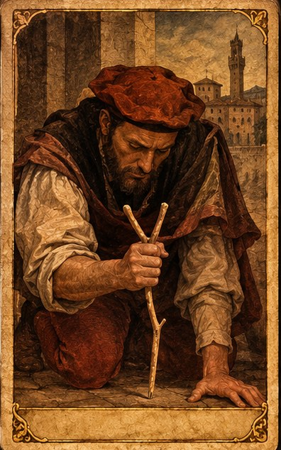
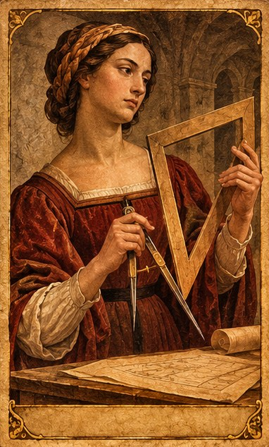
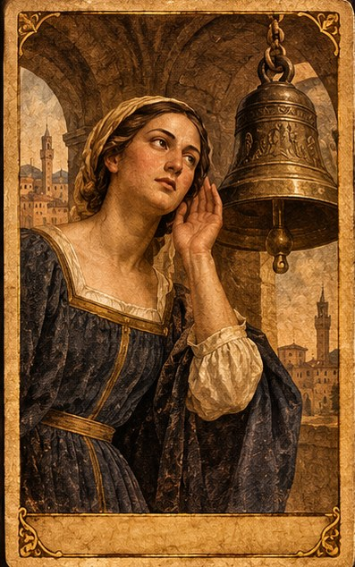
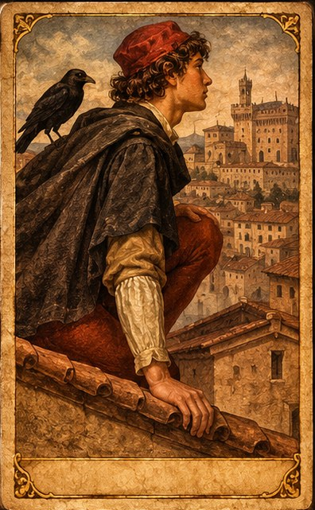
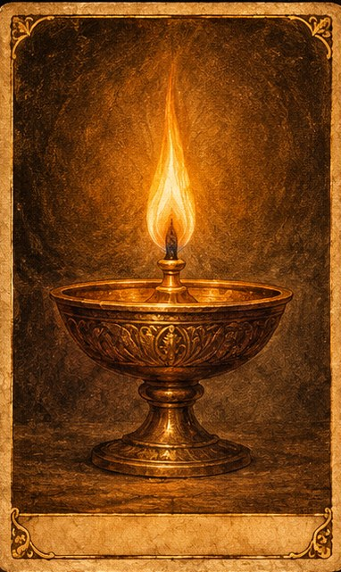
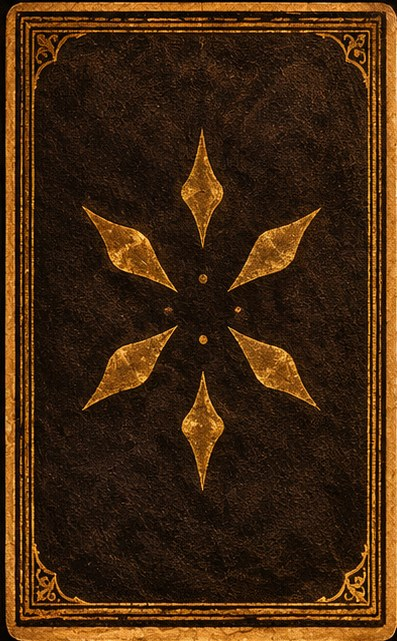

Cinque parti per giocare «Lo sguardo nell'ombra».

Il tra · I Il tra · I
Il tra · II Il tra · II
Il tra · III Il tra · III
Il tra · IV Il tra · IV
Il lume · V Il lume · V
Five parts to play «The Gaze in the Shadow».